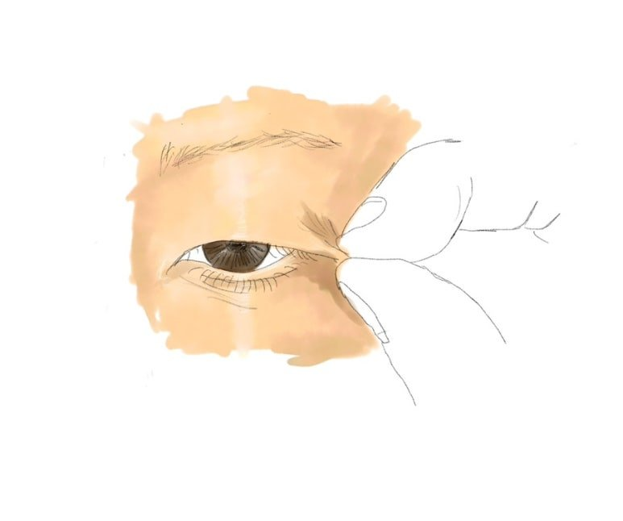
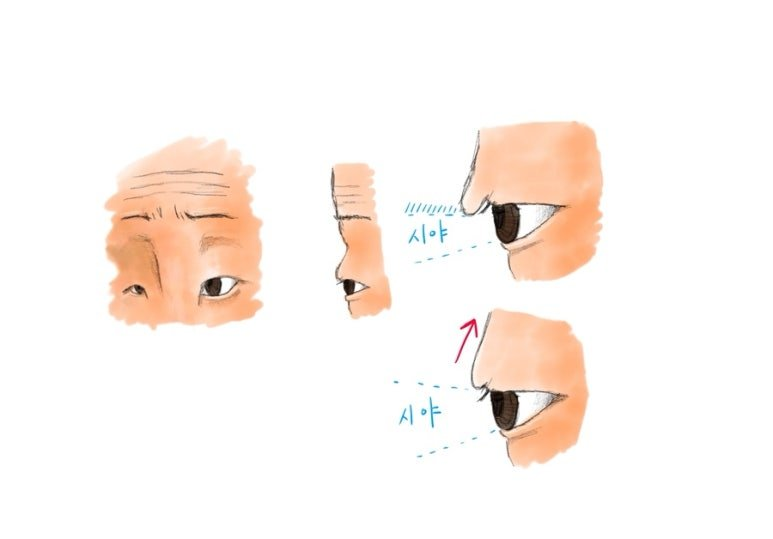
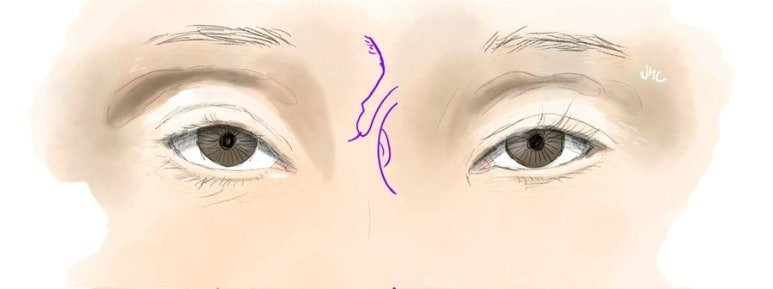
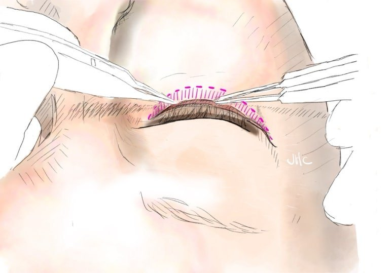
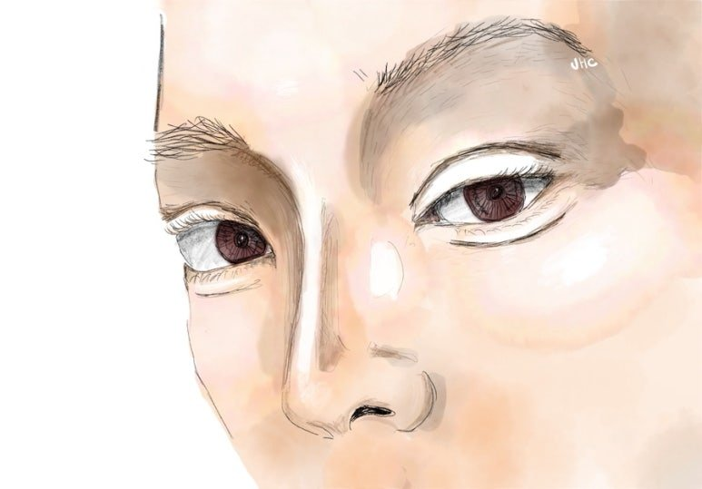

누구나 40대가 되면
눈에서 일어나는 변화가 있습니다
1. 눈꺼풀 피부가 처집니다

모든 사람은 정도의 차이만 있을 뿐
눈꺼풀 피부가 나이가 들며
점점 처지며,
그 처짐이 가시적인 변화와,
얼굴 전체 이미지에도 노화의 그림자를
드리우는 나잇대가 40대입니다
원래 쌍꺼풀이 있던 사람은
확연히 얇아지거나
속쌍꺼풀이 되버리며

쌍꺼풀이 없던 사람은
눈이 급격히 작아지며
이마의 주름이 많이 지게 됩니다
2. 눈위꺼짐이 심해집니다

이건 모두에게
일어나는 변화는 아닙니다
유전적으로 원래부터
눈위꺼짐의 유전자가 있는 분들은
주로 30대후반~40대에
확연히 눈위지방이 꺼지게 됩니다
이로 인해 젊었을 때 유지되던
쌍꺼풀과 눈모양이
갑자기 바뀌는 경험을 하게 됩니다

쌍꺼풀은 매몰이나 자연유착 같은 비절개로
하기 어려운 경우가 많아지고,
눈밑 또한 눈밑지로 안되고 하안검을 해야
되는 경우가 비율적으로 많아집니다
이유는 피부 여분, 곧 처짐이 임계점 이상으로
많아지기 때문이며,
수술의 디자인 또한
더욱 정확히 설계해야함을 의미합니다

구식 눈성형 : 90-2000년대
사실 40대 이후의 눈성형, 특히 쌍꺼풀은
옛날엔 매우 과하게 진행했습니다
처짐을 '확실히' 없앤다는 목적,
쌍꺼풀을 만드는 '본전' 생각 때문에
환자며 의사며 그런 결과를 선호했기 때문입니다
그러나 높은 고정위치로 인한
'소세지 쌍꺼풀'은
나이가 들어 처진 피부가 많아져도
이상한 느낌이 계속 나게 됩니다
그래서 40대 눈성형에서 중요한 것은,
처짐은 적절히 줄이되, 고정 높이를 너무
높지 않게 조절하여
촌스러운 느낌보단 고급스러운 이미지를
만드는 것입니다
이미 소세지 쌍꺼풀인 분들은
라인낮추기 재수술로 보다 나은 모습을
만들 수 있습니다
이런 경우에 라인이 낮아져서
처진 모습이 심해지지 않을까 걱정하시지만
낮춤 정도를 잘 조절한다면
오히려 젊어보이는 모습으로 만들 수 있습니다
40대의 눈성형이라고 해도
기본적인 수술 방법이나 원칙,
눈꺼풀의 조작 등은
다르지 않습니다
다만 나이에 따라
중요하게 생각하는 모양과 변화가 다르고
교정해야 하는 피부처짐의
정도가 다르기 때문에
각 시점에 오는 환자분에 맞는
맞춤형수술을 정확히 제공해드리는 것이
제 진료의 목적입니다